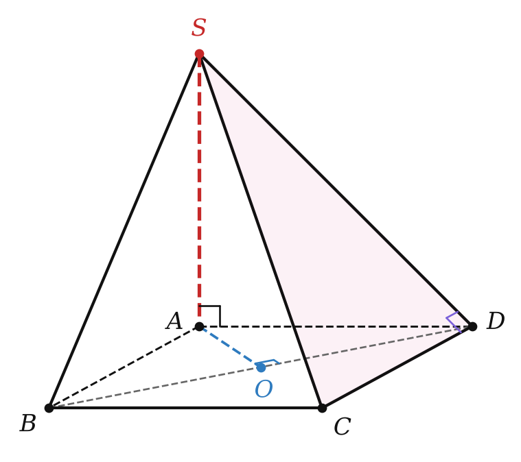
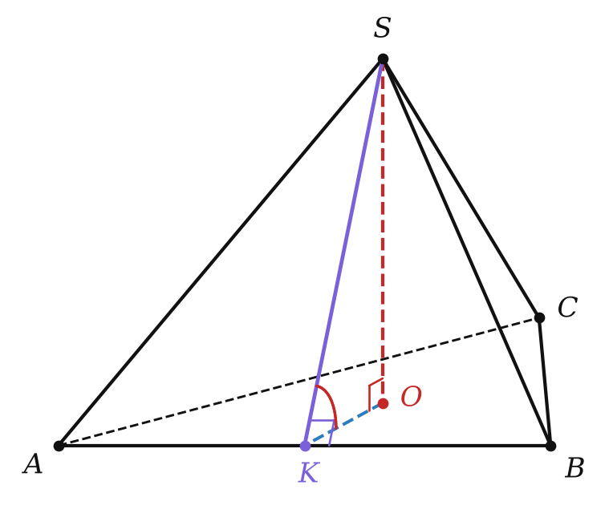

Сводка главы
Это урок-повторение. Вся глава 3 держится на одной идее: пространственную задачу сводим к плоской — находим нужную плоскость или прямоугольный треугольник и считаем в нём. Ниже — опорные таблицы (они повторяют итоги главы на с. 193–195 учебника). Сверь их со своей шпаргалкой.
Четыре угла
| угол | как найти | пределы |
|---|---|---|
| между прямыми (§ 9) | пересекающиеся — меньший из углов; скрещивающиеся — сдвигаем одну прямую параллельно до пересечения; параллельные — 0° | 0°…90° |
| между прямой и плоскостью (§ 13) | угол между прямой и её проекцией; ∥ или в плоскости — 0°, ⊥ — 90° | 0°…90° |
| двугранный (§ 14) | линейный угол: из точки ребра в каждой грани перпендикуляр к ребру | 0°…180° |
| между плоскостями (§ 14) | меньший из двугранных углов при их пересечении; ∥ — 0° | 0°…90° |
Перпендикулярность: признаки и свойства
| утверждение | когда применять |
|---|---|
| признак 10.1: a ⊥ двум пересекающимся прямым плоскости ⟹ a ⊥ плоскости | доказать, что прямая ⊥ плоскости (а значит, ⊥ любой её прямой) |
| 10.2: a ∥ b, a ⊥ α ⟹ b ⊥ α; 10.3: a ⊥ α, b ⊥ α ⟹ a ∥ b | перенос перпендикулярности, параллельные перпендикуляры |
| теорема о трёх перпендикулярах (§ 12): прямая плоскости ⊥ наклонной ⟺ ⊥ её проекции | расстояние от точки до прямой, линейный угол |
| признак 15.1: плоскость проходит через прямую, ⊥ другой плоскости ⟹ плоскости ⊥ | доказать перпендикулярность плоскостей |
| свойство 15.2: в одной из ⊥ плоскостей прямая, ⊥ линии пересечения, ⊥ другой плоскости | найти перпендикуляр к плоскости |
Расстояния
| от / между | это |
|---|---|
| точка — плоскость | длина перпендикуляра (наклонная всегда длиннее) |
| прямая ∥ плоскость | расстояние от любой точки прямой до плоскости |
| параллельные плоскости | от любой точки одной до другой |
| скрещивающиеся прямые | длина общего перпендикуляра = расстояние между параллельными плоскостями через них |
Формулы главы
| формула | что означает |
|---|---|
| l² = h² + p² | наклонная, перпендикуляр и проекция наклонной (§ 11) |
| d² = h² + r² | точка над центром вписанной окружности: расстояние до сторон (§ 12) |
| cos γ = cos α · cos β | три косинуса (§ 13) |
| sin γ = sin α · sin β | прямая в одной из двух плоскостей и другая плоскость (§ 14) |
| AB² = AC² + CD² + DB² | отрезок между перпендикулярными плоскостями (§ 15) |
| Sпр = S · cos φ | площадь ортогональной проекции (§ 16) |
| cos φ = (cos γ − cos α cos β) / (sin α sin β) | теорема косинусов для трёхгранного угла (§ 17) |
Разбор примеров

Основание пирамиды SABCD — квадрат со стороной 4, ребро SA перпендикулярно основанию, SA = 4. Найдите: а) угол между прямыми SB и CD; б) расстояние от S до прямой CD; в) угол между SC и плоскостью основания; г) двугранный угол при ребре CD; д) площадь грани SCD через площадь проекции; е) докажите, что (SAD) ⊥ (SCD).
а) Угол между прямыми. CD ∥ AB, значит, ищем угол SBA. Треугольник SAB прямоугольный и равнобедренный (SA ⊥ AB, SA = AB): угол 45°.
б) Теорема о трёх перпендикулярах. AD — проекция наклонной SD, AD ⊥ CD ⟹ SD ⊥ CD. Расстояние SD = √(16 + 16) = 4√2.
в) Угол с плоскостью. Проекция SC — это AC = 4√2, tg ∠SCA = 4/(4√2) = √2/2: угол arctg (√2/2).
г) Двугранный угол. AD ⊥ CD и SD ⊥ CD, линейный угол — ∠SDA: tg = 4/4, угол 45°.
д) Площадь проекции. Проекция треугольника SCD на основание — треугольник ACD, его площадь 8. S(SCD) = 8 / cos 45° = 8√2. Проверка напрямую: ½ · CD · SD = ½ · 4 · 4√2 = 8√2 — сошлось.
е) Перпендикулярные плоскости. CD ⊥ AD и CD ⊥ SA ⟹ CD ⊥ (SAD) (признак 10.1). Плоскость SCD проходит через CD ⟹ (SCD) ⊥ (SAD) (признак 15.1). ∎
В той же пирамиде найдите расстояние: а) между прямыми SA и BD; б) между прямыми SC и BD.
а) AO ⊥ BD (диагонали квадрата) и AO ⊥ SA (SA ⊥ основанию) — AO общий перпендикуляр: 2√2.
б) BD ⊥ AC и BD ⊥ SA ⟹ BD ⊥ (SAC). Проектируем на плоскость SAC: прямая BD превращается в точку O, и искомое расстояние — это расстояние от O до SC: OC · sin ∠SCA = 2√2 · 4/√48 = 2√2/√3 = 2√6/3.

В правильной треугольной пирамиде SABC сторона основания 6, высота SO = √3. Найдите двугранный угол при ребре основания и площадь боковой грани.
1) K — середина AB. OK ⊥ AB (OK — радиус вписанной окружности, r = 6/(2√3) = √3), по теореме о трёх перпендикулярах SK ⊥ AB. Линейный угол — ∠SKO: tg = √3/√3 = 1, угол 45°.
2) SK = √(3 + 3) = √6, площадь грани ½ · 6 · √6 = 3√6.
3) Проверка площадью проекции: грань проектируется в треугольник AOB, его площадь — треть площади основания: 9√3/3 = 3√3. И правда, 3√3 / cos 45° = 3√6.
Типичные ошибки главы
Угол больше 90°. Угол между прямыми, между прямой и плоскостью, между плоскостями не бывает тупым. Получил 120° в треугольнике — ответ 60°. Тупым бывает только двугранный угол.
Признак без пересекающихся прямых. Перпендикулярности к двум параллельным прямым плоскости мало, чтобы прямая была перпендикулярна плоскости.
Теорема о трёх перпендикулярах без перпендикуляра. Теорему можно применять, только если доказано, что отрезок MA перпендикулярен плоскости, а прямая лежит в этой плоскости.
«Линейный угол» со сторонами не перпендикулярными ребру. Угол между произвольными отрезками в гранях — не линейный угол. Проверь: обе стороны ⊥ ребру и выходят из одной точки ребра.
Угол с плоскостью — не с любой прямой. Угол между прямой и плоскостью — это угол с проекцией; с другими прямыми плоскости он больше (три косинуса).
Площадь проекции для косой проекции. Формула Sпр = S cos φ верна только для ортогональной проекции.
Задачи урока
Реши в тетради, к каждой задаче — чертёж. Разберём на занятии.
Тест к уроку
Домашнее задание
Задачи Д1–Д6 ниже, к каждой — рисунок. Из учебника: № 9.22, 12.23, 14.49, 15.33. Дополнить шпаргалку по главе тем, что выяснилось на уроке, и ещё раз прочитать итоги главы 3 (с. 193–195).